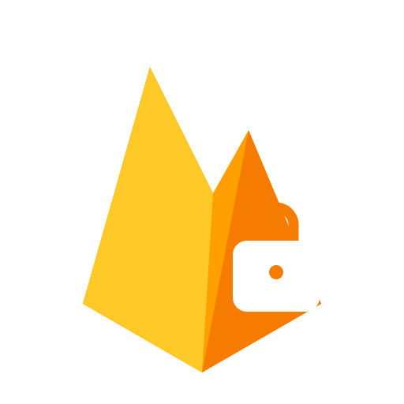

Research domain
Focused on meaningful learner support.
Only the confirmed dyscalculia information is stated below. Other project details remain editable placeholders.
Project Overview
Smart Learn brings together interactive educational activities, artificial intelligence, adaptive learning techniques, and progress monitoring to support a more engaging and personalised learning experience for children, parents, teachers, and educational professionals.
Confirmed component focus: Dyslexia uses AI-based Sinhala voice-interactive reading activities, pronunciation assessment, and adaptive learning. Working Memory uses adaptive memory games, AI-assisted puzzle generation, and progress monitoring. Dyscalculia includes Number Tracing, Number Listening, Number Sorting, Balloon Pop, CNN handwritten digit recognition, supportive feedback, and performance monitoring. TODO: add approved Dysgraphia description.
Literature Survey
Multisensory digital activities can combine visual, auditory, and interactive practice to support foundational number learning.
Research Gap
A need remains for child-friendly learning support that connects practice activities, supportive feedback, and meaningful performance records.
Research Problem
How can AI-assisted activities support foundational number learning for children with dyscalculia? TODO: approved statement.
Research Objectives
Provide activities, recognise handwritten digits 0–9 with a CNN, give supportive feedback, and record learner performance. TODO: wider objectives.
Methodology
A learner-feedback cycle
Preprocessing and CNN prediction apply where a handwritten digit is submitted.
- Learner interaction
- Response capture
- Preprocessing
- CNN prediction
- Supportive feedback
- Performance recording
Technologies Used
Proposed technologies: The icons below reflect technologies named in the project proposals. TODO: confirm final implementation technologies and versions.
React.js
Node.js
Express.js
MongoDB

Firebase AuthenticationCloud Firestore
Python
AI / ML